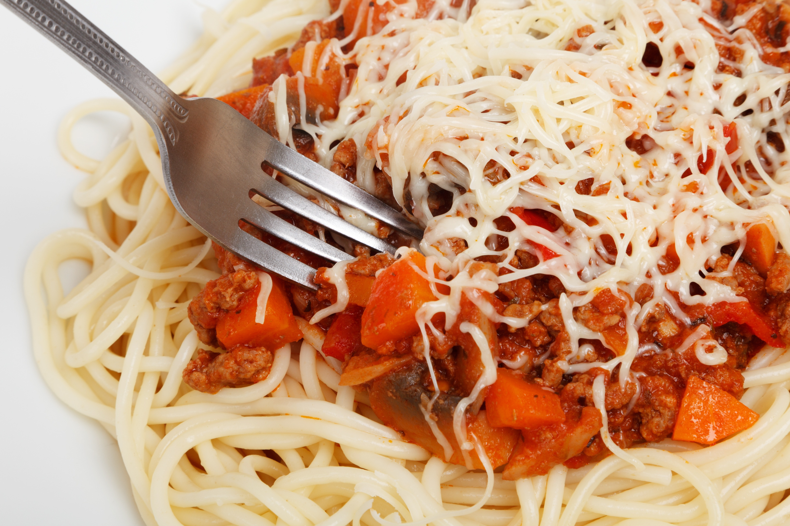

Spaghetti Recipe

How to make the easiest but most delicious Spaghetti!
Spaghetti is a staple of italian cuisine. This pasta dish is deliciously proportioned with a tomato
based
sauce
and
meaty meatballs. For this recipe, we will be substituting meatballs with ground beef. Let's get to
cooking!
Ingredients:
- 16 oz of ground beef
- 12 oz of spaghetti noodles
- 28 oz of tomato sauce of your choice
- 1 cup of diced onions
- 1/2 cup of shredded parmesan cheese
- salt, pepper, and garlic powder
Steps:
- Soak spaghetti noodles in boiling water for 8 minutes. Drain water when noodles are nice and
soft.
- Cook the ground beef in a cooking pan until it turns brown. Season generously with salt, pepper,
and
garlic powder.
- After the ground beef turns brown, add in the diced onions and tomato sauce.
- Lower the heat to simmer and let the sauce sit for 30 minutes. Stir and taste to adjust
seasoning to
one's
liking.
- When sauce is finish, turn off the heat and add the cooked spaghetti noodles into the sauce.
Stir to
coat
the noodles evenly.
- Finally, serve the pasta with a sprinkle of shredded parmesan cheese on top!
- ENJOY!